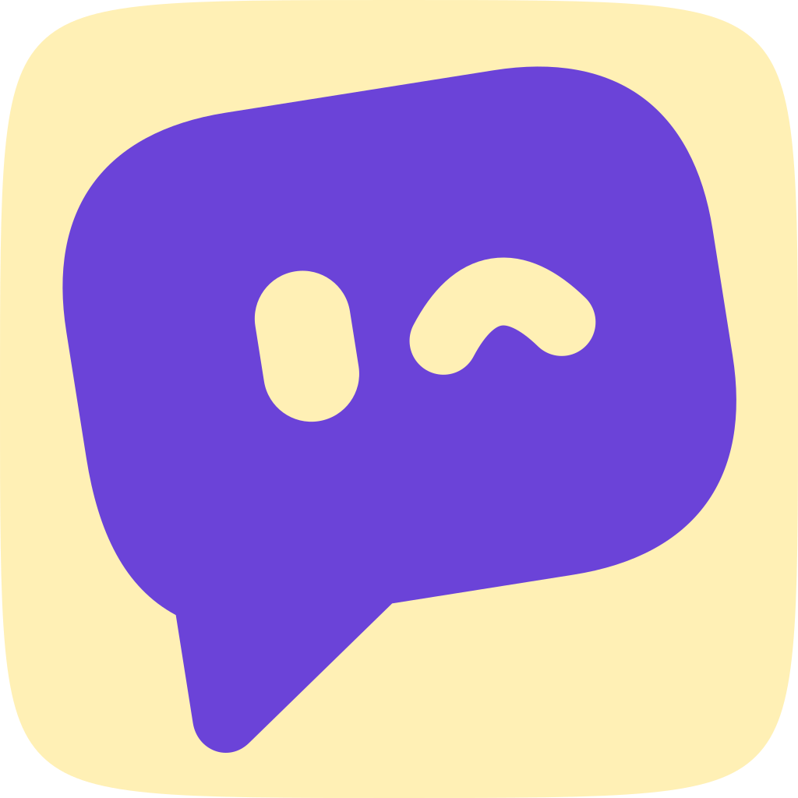
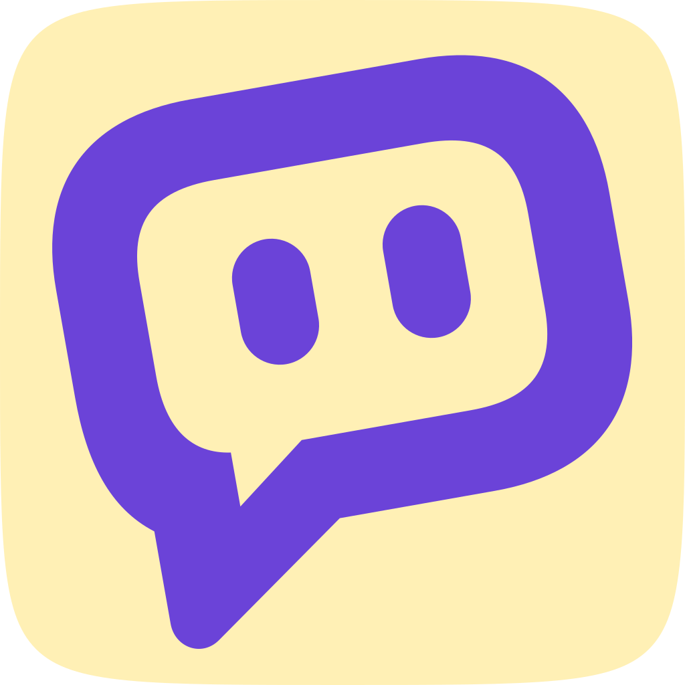
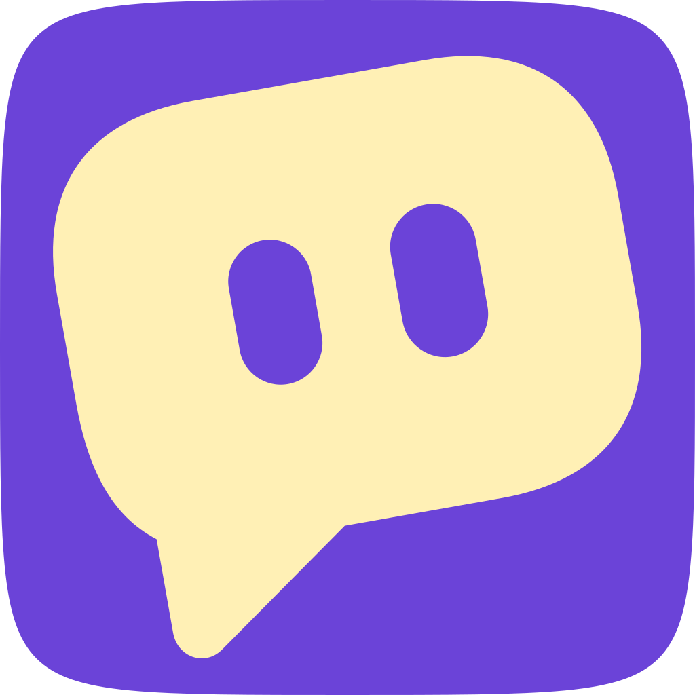
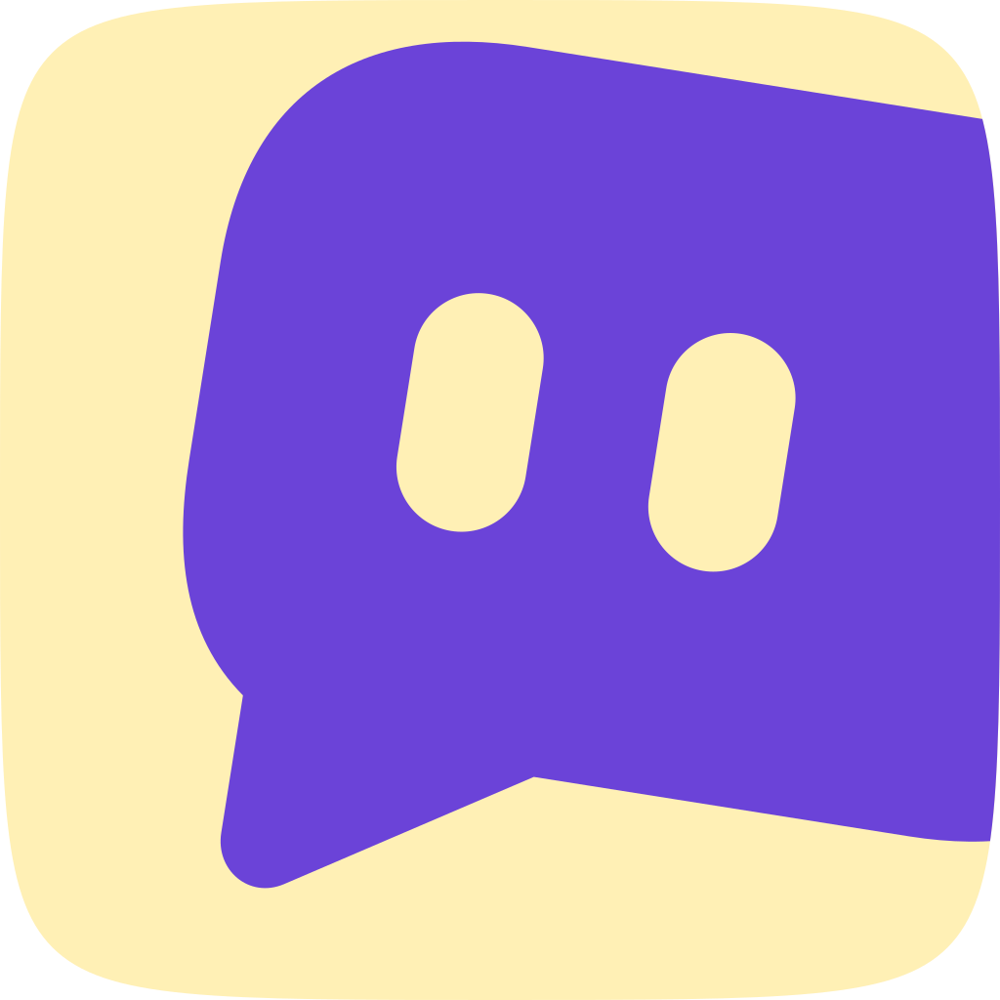
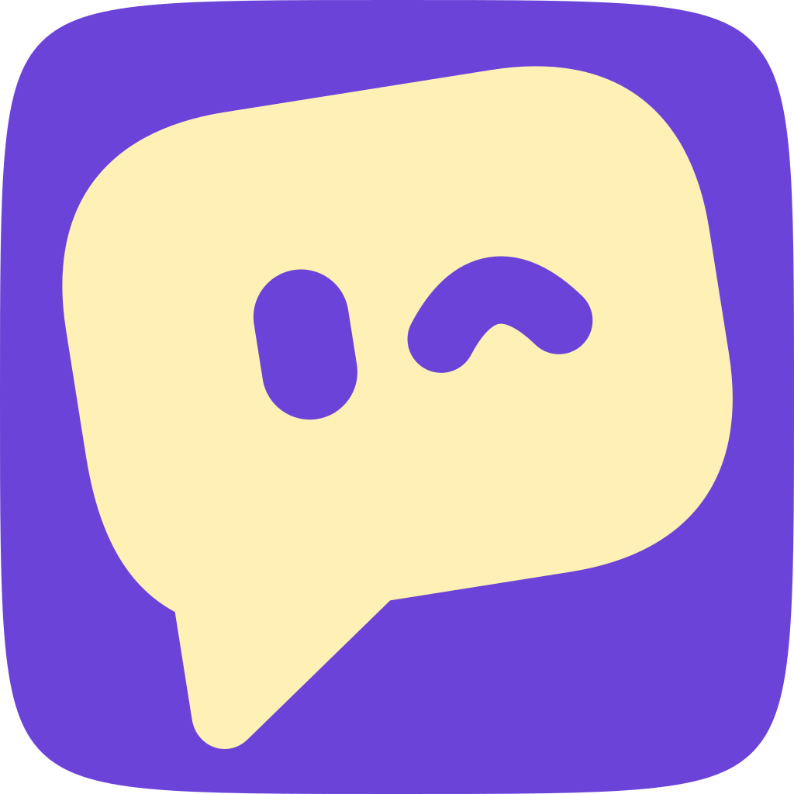
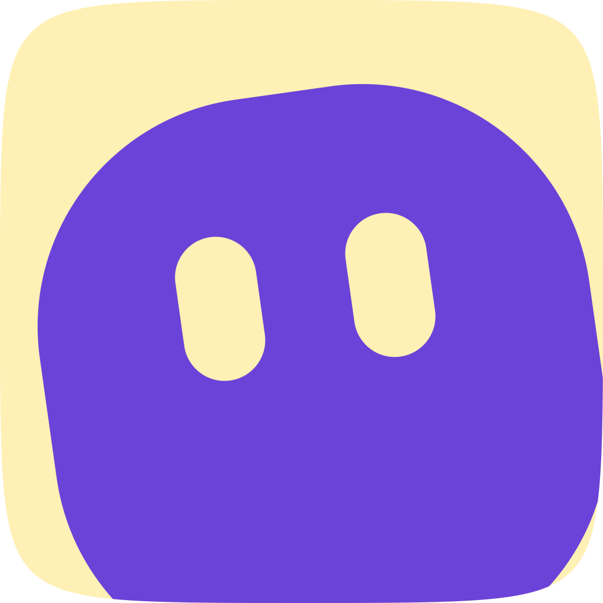
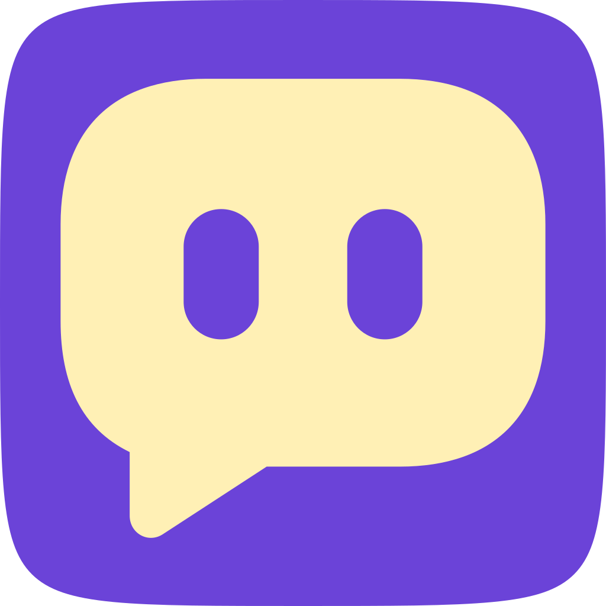
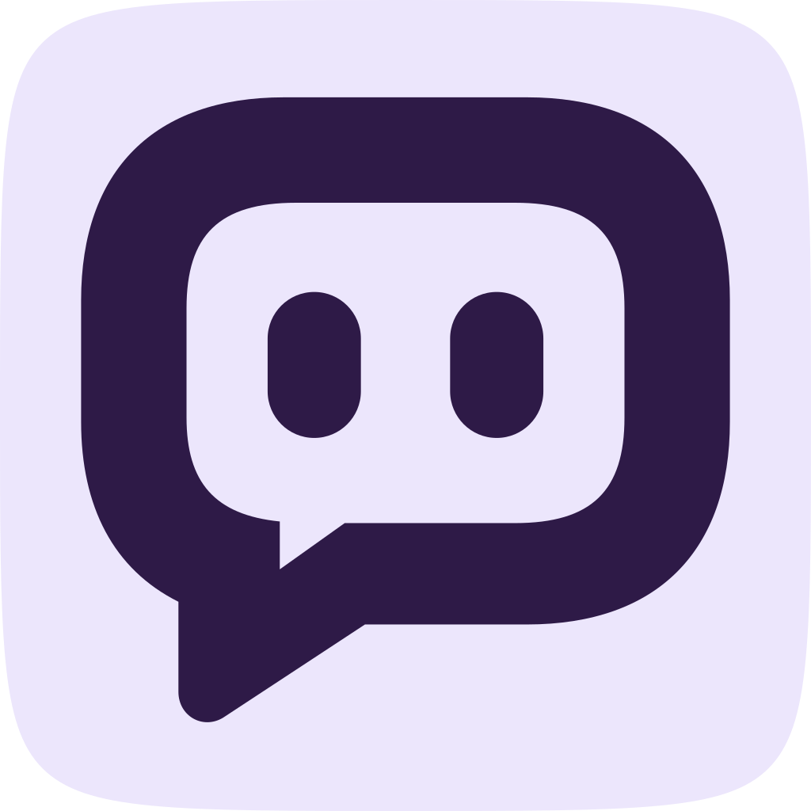

纯双色极简矢量稿（暖奶油黄 #FFF0B5 · 品牌紫 #6B43D8），保留用于桌面端、移动端、引导插画、空状态与不同运行环境标识。
#FFF0B5
#6B43D8

暖奶油黄（#FFF0B5）底 + 品牌紫（#6B43D8）完整跃起消息气泡（-9°）+ 左圆眼与右弯笑眼，兼顾「消息气泡 + 亲和搭档 Bot」双重识别度。
适用场景：Crewden Desktop 正式应用图标（macOS Dock / Windows 安装包与任务栏 / 悬浮通知头像）

延续 Web/iOS 原空心消息气泡环基因，描边加粗 2 倍并以 -10° 从左下尖角跃起，视线微向右上方。
适用场景：适合品牌徽章、设置页顶栏、文档/关于页标识

品牌紫（#6B43D8）底 + 暖奶黄（#FFF0B5）完整消息气泡从左下尖角 -10° 弹出，浅色背景对比鲜明。
适用场景：适合浅白背景海报、外部分享卡片、高对比徽标

从图标右侧边探入（+9°），完整保留左下消息气泡尖角与好奇双眼，把方块变为对话窗口。
适用场景：适合首次引导（Onboarding）插画、空会话欢迎卡、角落吉祥物提示

定稿「跃动眨眼气泡」的品牌紫底 + 暖奶黄反色版本，适合与浅色主图标配对区分不同环境（如 Beta / Dev 或默认数字员工头像）。
适用场景：适合开发环境/测试包图标区分、系统内置助手头像

大剪影微倾 8° 从底边探出的极简角色草稿。
适用场景：适合聊天输入框旁小挂件、加载态微动效角色

水平正姿 80% 实心气泡负空间图标，风格稳重规整。
适用场景：适合小尺寸角标、紧凑列表来源标记

对齐 iPhone 端 AppIcon 的浅薰衣草底（#ECE6FC）+ 深梅紫（#2E1A47）超粗圆环比例。
适用场景：适合移动端/跨端同色系主题物料